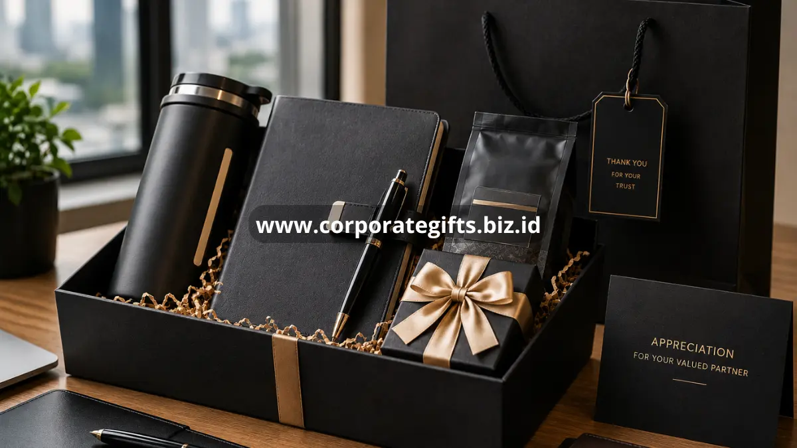

Poin Penting:
- Riset profil klien membantu memastikan gift terasa relevan, bukan generik.
- Anggaran perlu ditetapkan lebih dulu agar pilihan produk realistis.
- Personalisasi ringan meningkatkan kesan profesional tanpa berlebihan.
- Vendor yang tepercaya menjamin kualitas dan ketepatan waktu pengiriman.
- Evaluasi setelah pemberian membantu perbaikan program gifting berikutnya.
Bagaimana Langkah Awal Memilih Corporate Gift untuk Klien?
Langkah awal memilih corporate gift untuk klien adalah melakukan riset singkat mengenai industri, posisi, dan preferensi umum klien sebelum menentukan jenis produk.
Riset ini tidak perlu rumit. Tim procurement atau marketing dapat mengumpulkan informasi dasar seperti bidang usaha klien, jenis hubungan kerja sama, serta pengalaman gifting sebelumnya jika ada. Informasi ini membantu menghindari pilihan gift yang terlalu umum atau tidak relevan dengan kebutuhan klien.
Selain itu, penting untuk mempertimbangkan level hubungan bisnis. Klien strategis dengan nilai kontrak besar biasanya layak menerima gift dengan kualitas lebih premium dibandingkan klien baru yang baru memulai kerja sama.
Bagaimana Menentukan Anggaran Gift untuk Klien Secara Realistis?
Menentukan anggaran gift untuk klien secara realistis dilakukan dengan mempertimbangkan skala hubungan bisnis, jumlah penerima, dan kapasitas keuangan perusahaan.
Perusahaan dapat membagi anggaran berdasarkan tingkatan klien, misalnya klien utama, klien reguler, dan calon klien prospektif, dengan alokasi anggaran yang berbeda pada setiap kategori. Pendekatan ini membantu menjaga proporsi anggaran tetap wajar tanpa mengorbankan kualitas gift untuk klien penting.
Sebagai gambaran umum dari konteks global, sejumlah laporan industri mencatat bahwa perusahaan umumnya mengalokasikan kisaran anggaran tertentu per klien yang disesuaikan dengan kapasitas masing-masing perusahaan, dan angka ini dapat bervariasi cukup luas antarindustri (Sumber: Ridgegap, laporan statistik industri gifting korporat, 2026). Karena variasi ini cukup besar antarnegara dan sektor usaha, perusahaan di Indonesia disarankan menetapkan anggaran berdasarkan kapasitas internal dan nilai strategis klien, bukan hanya mengikuti angka acuan dari luar negeri.
Produk Apa Saja yang Cocok Dijadikan Corporate Gift untuk Klien?
Produk yang cocok dijadikan corporate gift untuk klien meliputi barang fungsional berkualitas, hampers premium, dan aksesori kerja dengan sentuhan personalisasi ringan.
Beberapa contoh kategori produk yang umum dipilih:
- Alat tulis premium atau organizer kerja dengan desain elegan.
- Hampers berisi produk makanan atau minuman berkualitas, terutama untuk momen hari raya.
- Aksesori kerja seperti tas laptop atau tumbler dengan bahan berkualitas.
- Produk lokal atau kerajinan khas daerah sebagai bentuk apresiasi yang lebih personal.
Pemilihan produk sebaiknya menghindari barang yang terlalu personal atau sensitif secara budaya, serta memastikan kualitas barang mencerminkan citra profesional perusahaan pemberi.

Bagaimana Cara Memilih Vendor Corporate Gift yang Tepercaya?
Cara memilih vendor corporate gift yang tepercaya adalah dengan memeriksa portofolio, kualitas sampel produk, ketepatan waktu pengiriman, dan fleksibilitas dalam personalisasi.
Sebelum memutuskan bekerja sama, sebaiknya perusahaan meminta sampel produk untuk menilai kualitas bahan dan hasil personalisasi seperti cetak logo. Selain itu, penting untuk menanyakan kapasitas produksi vendor, terutama jika perusahaan membutuhkan gift dalam jumlah besar menjelang musim hari raya ketika permintaan meningkat.
Vendor yang baik juga biasanya transparan mengenai estimasi waktu produksi dan pengiriman, serta memiliki riwayat kerja sama dengan perusahaan lain yang dapat dijadikan referensi.
Bagaimana Cara Mengevaluasi Keberhasilan Program Gifting untuk Klien?
Cara mengevaluasi keberhasilan program gifting untuk klien dapat dilakukan dengan mengamati respons klien, kelanjutan hubungan bisnis, dan konsistensi program dari tahun ke tahun.
Evaluasi tidak harus rumit. Perusahaan dapat mencatat respons sederhana seperti ucapan terima kasih, umpan balik informal, atau perubahan dalam intensitas komunikasi setelah pemberian gift. Selain itu, tren keberlanjutan kerja sama pada klien yang menerima gift secara konsisten juga dapat menjadi indikator kualitatif keberhasilan program.
Memilih corporate gift indonesia untuk klien yang tepat memerlukan kombinasi riset profil klien, anggaran realistis, pemilihan produk relevan, serta kerja sama dengan vendor tepercaya. Pendekatan ini membantu perusahaan membangun hubungan bisnis yang lebih kuat tanpa mengorbankan efisiensi anggaran. Pelajari juga panduan lengkap mengenai corporate gift Indonesia dan ide corporate gift untuk karyawan dan klien untuk pertimbangan yang lebih komprehensif.
FAQ
Bagaimana cara menentukan gift yang tepat untuk klien baru?
Gift untuk klien baru sebaiknya bersifat umum namun berkualitas baik, karena tujuannya adalah membangun kesan awal yang positif tanpa terkesan berlebihan.
Apakah personalisasi nama klien pada gift diperlukan?
Personalisasi nama dapat meningkatkan kesan personal, namun tidak wajib dan sebaiknya disesuaikan dengan anggaran serta jumlah penerima.
Berapa lama waktu yang dibutuhkan untuk memesan corporate gift dalam jumlah besar?
Waktu yang dibutuhkan bervariasi tergantung vendor dan tingkat personalisasi, sehingga sebaiknya pemesanan dilakukan jauh sebelum momen pemberian, terutama menjelang musim hari raya.